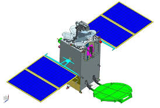
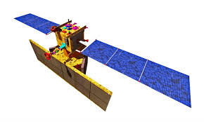

Gsat-The GSAT (Geosynchronous Satellite) satellites are India's indigenously developed communications satellites, used for digital audio, data and video broadcasting.
20 GSAT satellites manufactured by ISRO have been launched, out of which 14 are in service.

Navic-The Indian Regional Navigation Satellite System (IRNSS), with an operational name of NavIC (acronym for navic Navigation with Indian Constellation; also, navik 'sailor' or 'navigator' in Indian languages), is an autonomous regional satellite navigation system that provides accurate real-time positioning and timing services.
.
NavIC system consists of eight satellites, three of them in geostationary orbits and five in inclined geosynchronous orbits, with plans to expand to 12 satellites